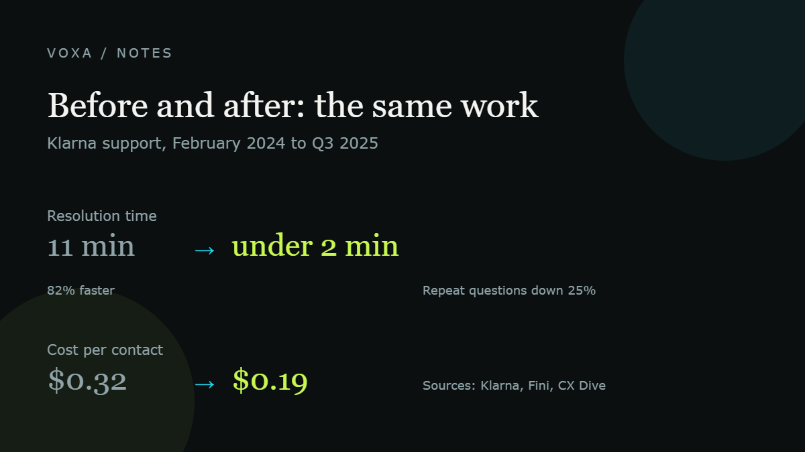

What AI actually changed at work: before and after, in numbers

Quick answer
AI did not delete the work. It deleted the first pass: the drafts, the sorting, the typing, the notes. Companies that got real results kept a human on the messy cases. The ones that removed the human ended up hiring people back.
Key numbers
- 2.3 million conversations handled by Klarna's AI assistant in its first month, two-thirds of all support chats
- Average resolution time: 11 minutes before, under 2 minutes after
- Repeat questions about the same issue: down 25%
- Cost per transaction: $0.32 to $0.19; $60 million in documented savings by Q3 2025
- Klarna support costs still rose from $42 million to $50 million year over year, and it resumed hiring support staff in May 2025
Before: the day started with typing
Most office work is four tasks wearing different clothes. Read something, sort it, write something, send it. Before these tools existed, every one of those steps needed a person sitting still at a screen.
A support agent read a ticket, looked up a policy, typed a reply. A marketer stared at a blank page and wrote a rough first draft. Someone on a call took notes and then typed them again later, in a nicer version.
None of that was hard. It just took hours, and hours are the one thing you cannot buy back.
After: same tasks, fewer minutes
The cleanest public example is Klarna, the Swedish payments company. In February 2024 its AI assistant handled 2.3 million conversations in its first month, about two-thirds of all its support chats. Average resolution time fell from 11 minutes to under 2 minutes, an 82% improvement. Repeat questions about the same issue dropped 25%, which usually means the first answer was actually right. By the third quarter of 2025 the company reported 60 million dollars in savings and a cost per transaction that fell from 0.32 to 0.19 dollars.
Read that as a business owner and the shape is clear. The same job, roughly a sixth of the time, at around 40% less cost per contact.
| Task | Before | After |
|---|---|---|
| Answering a support chat (Klarna) | 11 min average, a person on every one | Under 2 min average, AI on about two-thirds |
| Cost per support contact (Klarna) | $0.32 | $0.19 |
| Repeat questions (Klarna) | Baseline | Down 25% |
| First draft of an article | Two to three hours to a blank page | Twenty minutes editing a rough AI draft |
| Meeting notes | Someone typing during the call | Transcript and summary, a few minutes of review |
| The same question asked every day | Answered by hand, every time | Written once, then answered automatically |
Only the top three rows are Klarna numbers. The rest are the pattern most teams report, not a measured study, so treat them as direction rather than a promise.
The part that never makes it into the case study
Klarna went further than most. It paused hiring, cut its workforce, and publicly said AI was doing the work of 700 agents. Then in May 2025 it started hiring support people again. Its support costs actually rose from 42 million to 50 million dollars year over year, even with two-thirds of chats automated.
That is not a story about AI failing. It is a story about scope. Gartner scored 432 customer service AI use cases and found 25% produced a positive return, 25% a negative one, 11% broke even, and 42% were unclear because nobody could measure them. A survey of more than 600 customer experience leaders found 70% had adopted AI, only 2% saw real value from it, and 75% had rolled back customer-facing agents after launch.
The difference between the wins and the rollbacks is rarely the model. It is what people pointed it at. High volume, repeatable, boring questions work. Angry customers, refunds, edge cases and anything legal still need a person.
What we would do with this
Pick one task you do more than ten times a week. Count the minutes it takes now. Automate it, keep a human check on the output, and count the minutes again after two weeks. If the number does not move, you automated the wrong thing.
Then write down what the AI is not allowed to answer. Every company with a good result had that list before it had a model.
Where these numbers come from
Plain links to the original sources, so you can check every figure yourself. We do not take sponsorships and we do not get paid for these links.
- Klarna: AI assistant handles two-thirds of customer service chats in its first month
- CX Dive: Klarna recruits humans again for customer service
- Fini: Klarna AI assistant, both halves of the story with dated numbers
- IrisAgent: AI customer support statistics 2026, including the Gartner and Forethought findings
- Fast Company: Klarna tried to replace its workforce with AI
Common questions
Did AI actually replace customer service jobs?
Not cleanly. Klarna shrank its workforce and paused hiring, then started hiring support staff again in 2025. In most companies the pattern is fewer routine roles and more escalation and specialist roles, not a straight swap.
Is going from 11 minutes to 2 minutes realistic for a small business?
The direction is real, the size depends on your inbox. If most of your questions are the same ten things, expect a big drop. If every enquiry is unusual, expect much less.
What should a small team automate first?
The task you repeat most often with the least judgement in it. Answering the same question, moving data between two tools, or writing a first draft. Keep a person checking anything that touches money or a customer account.
How do I know if the automation is working?
Measure one number before and after: minutes per task, or the share of contacts handled without a human. If it does not move in two weeks, the tool is doing the wrong job.